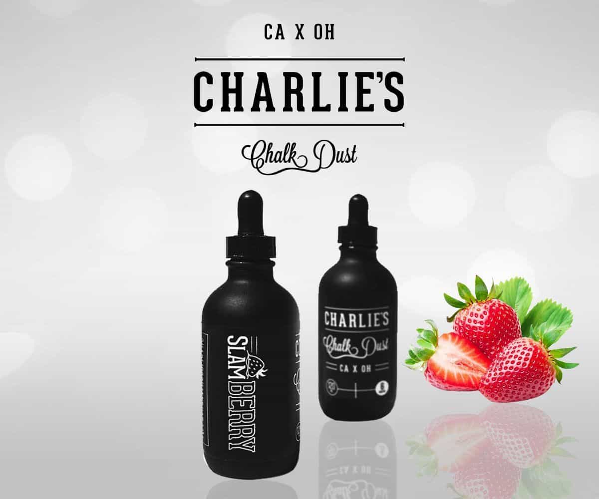
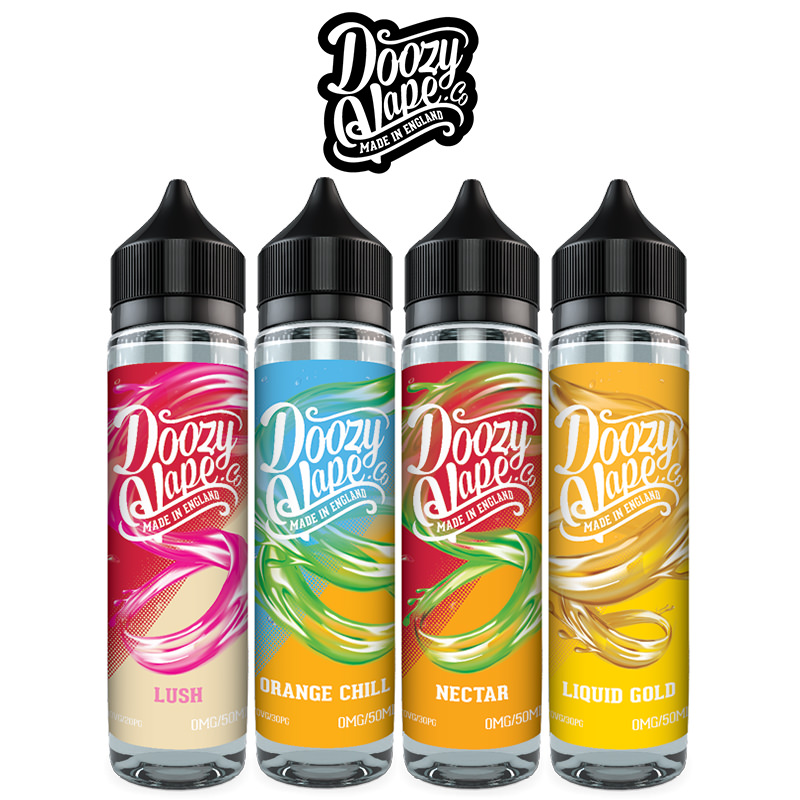
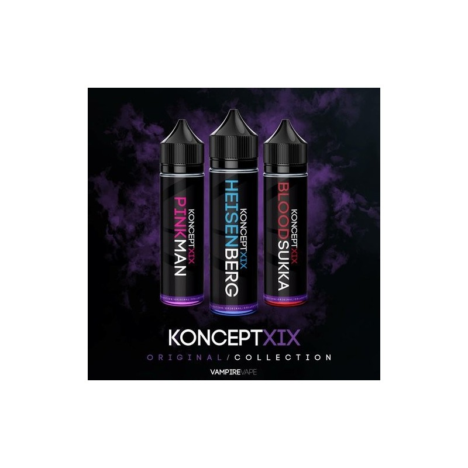
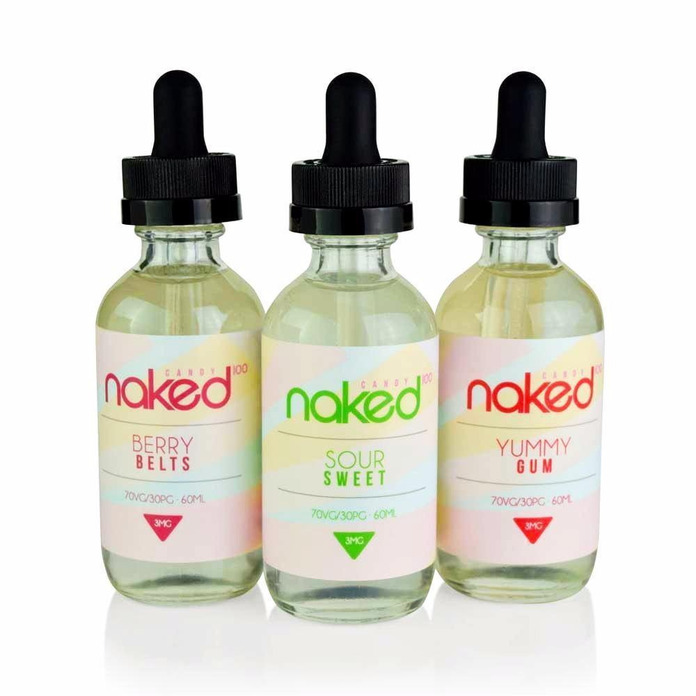
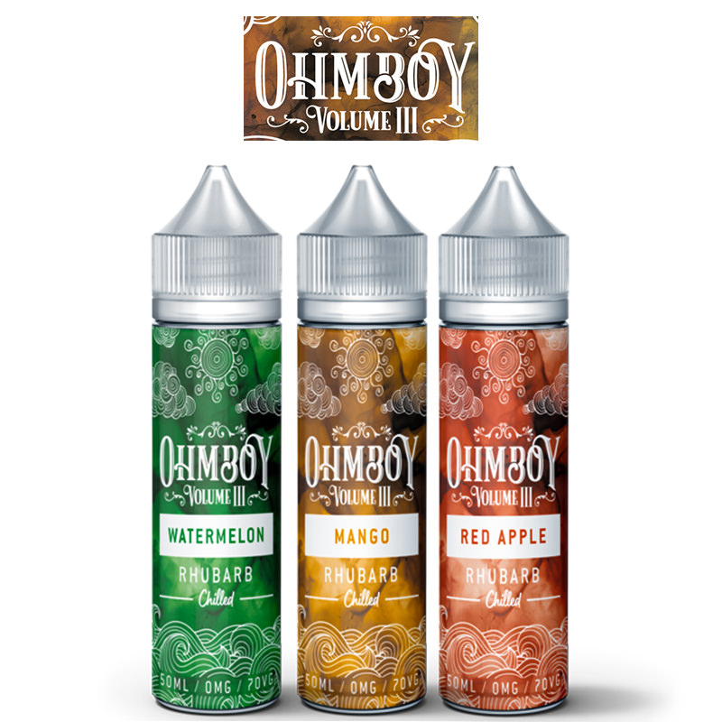
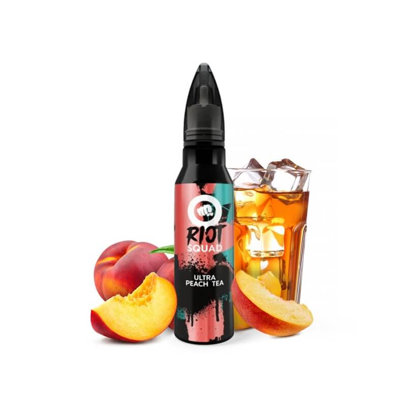
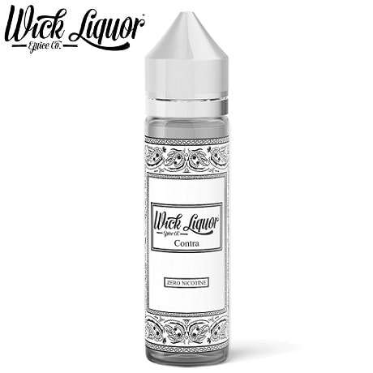
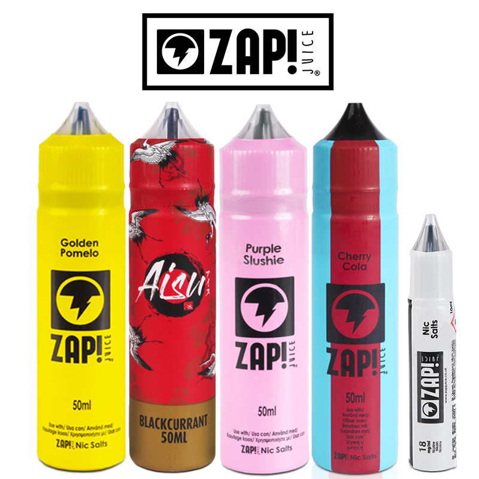

A relative newcomer to the shortfill scene, Froot comes all the way from the eastern USA, bringing a small but select range of invigorating fruit flavours that dazzle the palette!
A real prestige vape company, Charlie’s Chalk Dust are purveyors of a smaller yet focussed range of unique, high quality flavours.
Yorkshire-based Doozy Vape have been around for a good few years now, with classic flavours like Liquid Gold and Greek Delight having provided years of satisfaction for many a vaper.
Despite the cool and sinister name, Koncept XIX is in fact the sexy short fill range of Vampire Vape, giving them the chance to break away from their usual botanical blends and flex on us with sumptuous desserts like caramel/vanilla spongecake and jam roley poley!
Naked by name and naked by nature, this American vape juice company prides themselves on using entirely natural, unprocessed ingredients in the pursuit of the utmost clarity in flavour.
Now here’s a real winner; Ohm Boy have been flying off the shelf since we first encountered them.They are characterised by a floral, fruity bouquet of flavour that dazzles the senses and leaves a delicious aftertaste.
And now onto cult favourites Riot Squad, renowned for their unique branding and powerful fruit, dessert and beverage blasts.
Next up we have Wick Liquor, who utilise a branding which evokes aspects of Americana to help define their unique and popular flavours.
ZAP! are a long standing fan favourite, known widely for their tangy unforgettable fruit flavours and mixtures, as well as classic candy flavours like Vintage Cola and unique beverage blends like Peach Iced Tea.
Needing no introduction, Twelve Monkeys have been a fixture on the high VG shelf for years and are beloved by many for their scintillating tropical fruit blends